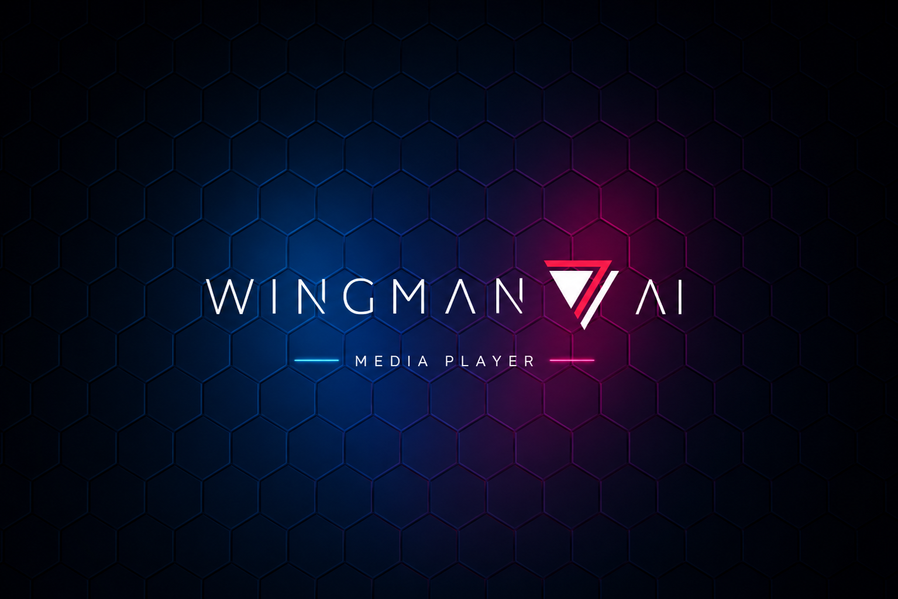
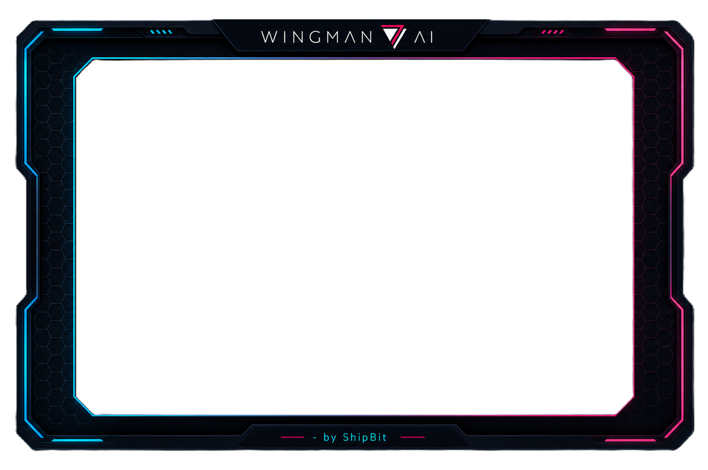

Stream with OBS Studio
Wingman Player streams video through the player window and audio through a dedicated localhost feed only OBS can reach. Add two sources in OBS:
1. Video: Window Capture
2. Audio: Media Source
http://127.0.0.1:17329/stream.wav
Press F8 to hide the player from your monitor. Viewers still see it in your stream.